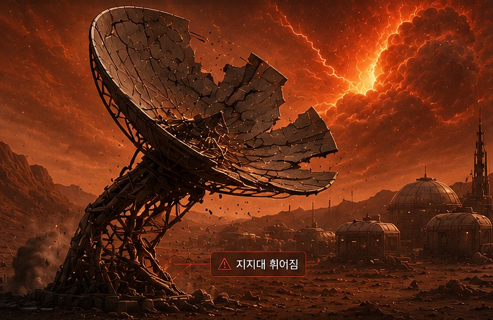
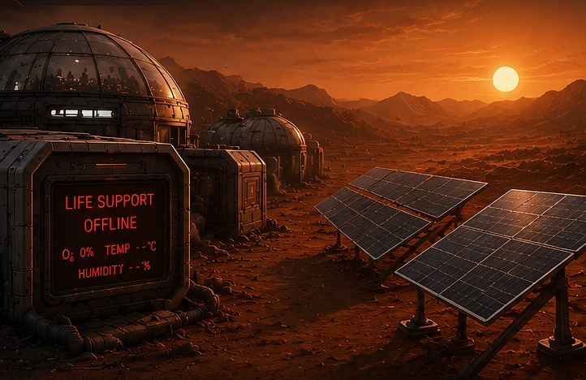

📡
KOSA-1 복구 임무 — 모듈을 순서대로 진행하세요
MODULE 01 수직의 세계(1단계 → 2단계) → MODULE 02 그림자의 세계 · 각 모듈 완료 후 📝 성찰로그

MODULE 01
🏗️ 기지 구조 복구 작전
⚠
TAP TO OPEN화면을 눌러 상황 확인
1단계 기둥복구수학실험실미션1미션2미션3문제탐구문제해결
PROBLEM SITUATION ⚠

MODULE 02 · FINAL
⚡ 생명유지장치 전력 복구
⚠
TAP TO OPEN화면을 눌러 상황 확인
개념탐구기본개념심화①심화②미션탐구
PROBLEM SITUATION ⚠